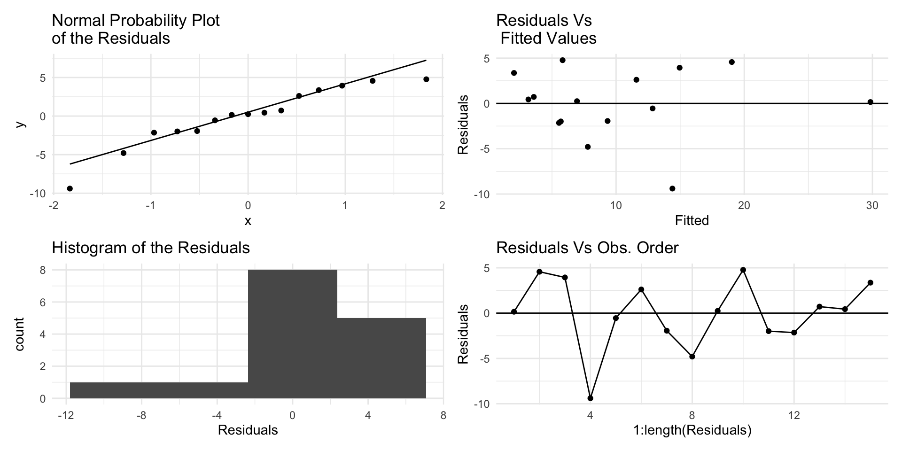

country Alcohol Death
1 22.9 30.0
2 15.2 23.6
3 12.3 18.9
4 11.9 5.0
5 10.8 12.3
6 9.9 14.2
7 8.3 7.4
8 7.2 3.0
9 6.6 7.2
10 5.8 10.6
11 5.7 3.7
12 5.6 3.4
13 4.2 4.3
14 3.9 3.6
15 3.1 5.4Chapter 6:
Models with a Single Predictor
Plot of Alcohol consumption data

Residual plot for Alcohol~deaths model
- For small sample sizes, residual diagnostics is difficult

Example (Alcohol consumption data)
- Obtain the estimated slope using low and upper group median pairs as \(b = (18.9-3.7)/(12.3-4.2) = 1.88\).
- Obtain the y-intercept using either the low or upper group median points \(a = Y-bX = 3.7-1.88*4.2 = -4.2\).

R function
Call:
line(cirrhosis$Death, cirrhosis$Alcohol)
Coefficients:
[1] 4.0797 0.4379
The line() function gives a slightly different slope & intercept.
Two more Robust models
We can also fit a robust linear model using the functions MASS::rlm() robustbase::lmrob().

Example (Alcohol consumption data)
library(caret); library(MASS, exclude = "select")
set.seed(123)
fitControl <- trainControl(method = "repeatedcv", number = 5, repeats = 100)
lmfit <- train(Death ~Alcohol, data= cirrhosis,
trControl = fitControl, method="lm")
lm.rmses <- lmfit$resample[,1]
rlmfit <- train(Death ~Alcohol, data = cirrhosis,
trControl=fitControl, method = "rlm")
rlm.rmses <- rlmfit$resample[,1]
dfm <- cbind.data.frame(lm.rmses,rlm.rmses)
library(patchwork)
qplot(data=dfm, lm.rmses, geom="boxplot") /
qplot(data=dfm, rlm.rmses, geom="boxplot")
Choosing the best model
- The
bestmodel is not decided purely on statistical grounds. - If the main aim is to describe relationships, include all the relevant variables.
- If the main aim is to predict, prefer the simplest feasible (parsimonious) model with smaller number of predictors.
- Examine the literature to discover similar examples, see how they are tackled, discuss the matter with the researcher etc.